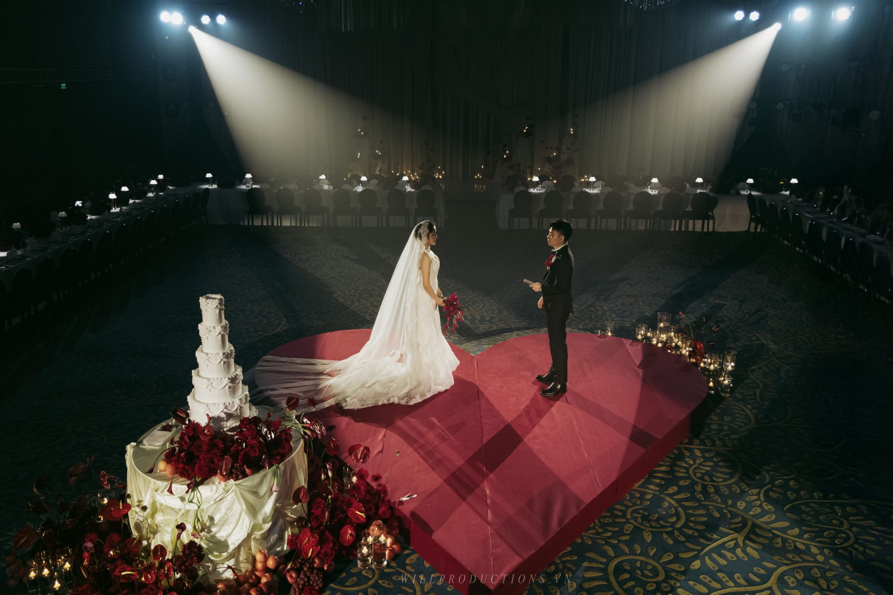

Ways of working01 — Services
Every story calls for a different kind of care.
The work may begin in a city, a faraway place, or a single room. Start with the shape of the celebration; we will help you find the care it asks for.
Choose a way in
Begin with the day you are imagining.
Four active ways of working, each made for a different scale, setting and level of support. Open the one closest to your celebration to understand what it holds.

Destination Wedding
A place changes the work.
For celebrations in a special destination in Vietnam, WIS acts as the point of connection between you and the people who will make the day happen there — so you can stay close to each other and the experience.
- Sapa
- Moc Chau
- Ninh Binh
- Quy Nhon
- Da Nang
- Nha Trang
- Phu Quoc

Before we begin
Start with what is already true.
You do not need to know the package yet. Tell us about the people, place and feeling that matter most; WIS will help you identify the kind of support that fits.
PeopleWho needs to be held close?
PlaceWhere will everyone gather?
ScaleWhat does the day need to carry?